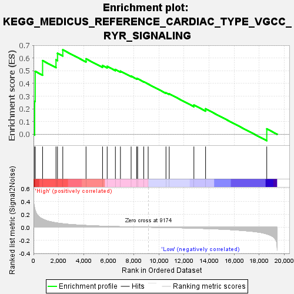
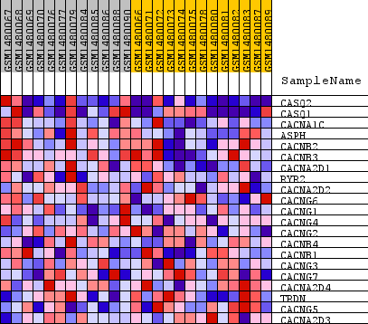
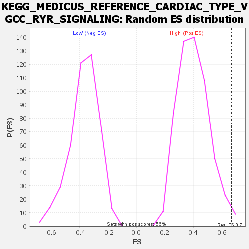

| Dataset | WG6v3.MRPL3.cls#High_versus_Low.MRPL3.cls#High_versus_Low_repos |
| Phenotype | MRPL3.cls#High_versus_Low_repos |
| Upregulated in class | High |
| GeneSet | KEGG_MEDICUS_REFERENCE_CARDIAC_TYPE_VGCC_RYR_SIGNALING |
| Enrichment Score (ES) | 0.6649898 |
| Normalized Enrichment Score (NES) | 1.6554955 |
| Nominal p-value | 0.012455516 |
| FDR q-value | 0.32959428 |
| FWER p-Value | 0.714 |

| SYMBOL | TITLE | RANK IN GENE LIST | RANK METRIC SCORE | RUNNING ES | CORE ENRICHMENT | |
|---|---|---|---|---|---|---|
| 1 | CASQ2 | CASQ2 | 93 | 0.293 | 0.2600 | Yes |
| 2 | CASQ1 | CASQ1 | 132 | 0.263 | 0.4956 | Yes |
| 3 | CACNA1C | CACNA1C | 724 | 0.127 | 0.5798 | Yes |
| 4 | ASPH | ASPH | 1792 | 0.068 | 0.5860 | Yes |
| 5 | CACNB2 | CACNB2 | 1911 | 0.064 | 0.6381 | Yes |
| 6 | CACNB3 | CACNB3 | 2334 | 0.054 | 0.6650 | Yes |
| 7 | CACNA2D1 | CACNA2D1 | 4187 | 0.027 | 0.5941 | No |
| 8 | RYR2 | RYR2 | 5504 | 0.016 | 0.5409 | No |
| 9 | CACNA2D2 | CACNA2D2 | 5873 | 0.014 | 0.5346 | No |
| 10 | CACNG6 | CACNG6 | 6528 | 0.010 | 0.5102 | No |
| 11 | CACNG1 | CACNG1 | 6930 | 0.009 | 0.4973 | No |
| 12 | CACNG4 | CACNG4 | 7782 | 0.005 | 0.4580 | No |
| 13 | CACNG2 | CACNG2 | 8231 | 0.003 | 0.4379 | No |
| 14 | CACNB4 | CACNB4 | 8302 | 0.003 | 0.4372 | No |
| 15 | CACNB1 | CACNB1 | 8790 | 0.001 | 0.4133 | No |
| 16 | CACNG3 | CACNG3 | 9141 | 0.000 | 0.3953 | No |
| 17 | CACNG7 | CACNG7 | 10561 | -0.005 | 0.3266 | No |
| 18 | CACNA2D4 | CACNA2D4 | 10820 | -0.006 | 0.3185 | No |
| 19 | TRDN | TRDN | 12787 | -0.015 | 0.2303 | No |
| 20 | CACNG5 | CACNG5 | 13719 | -0.020 | 0.2006 | No |
| 21 | CACNA2D3 | CACNA2D3 | 18597 | -0.103 | 0.0425 | No |

